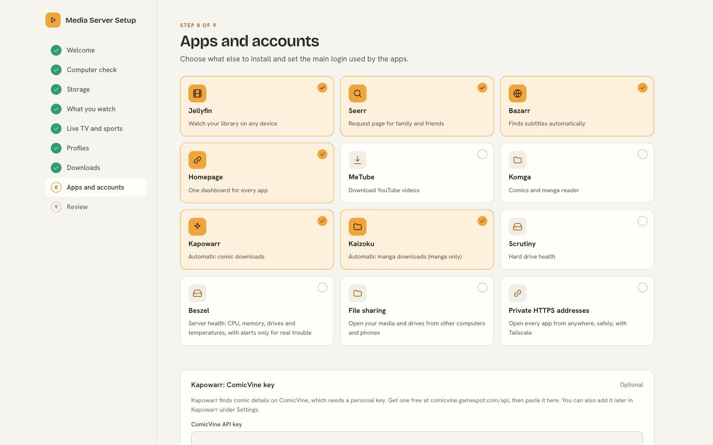
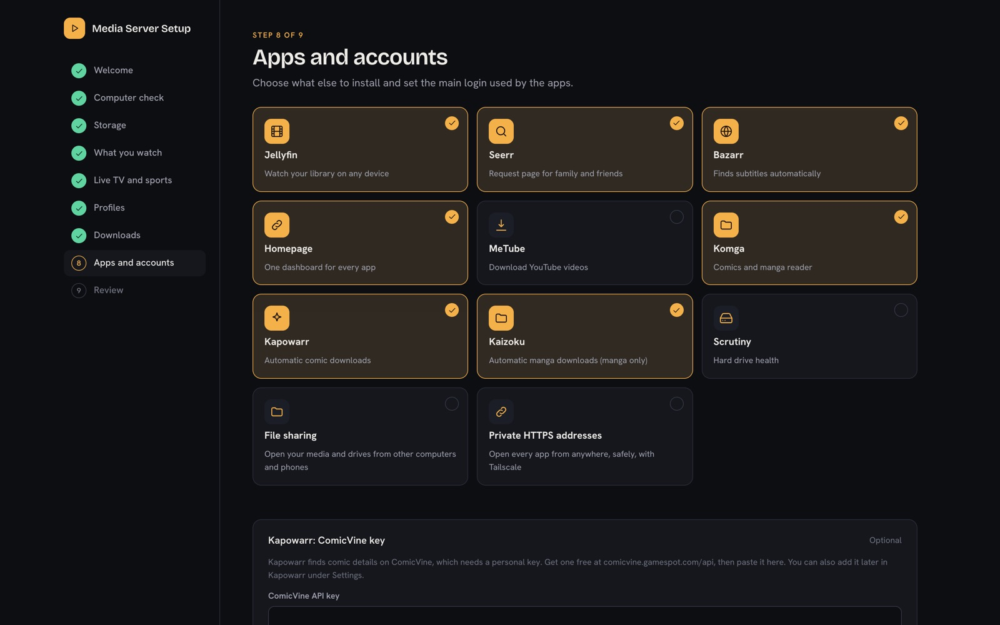
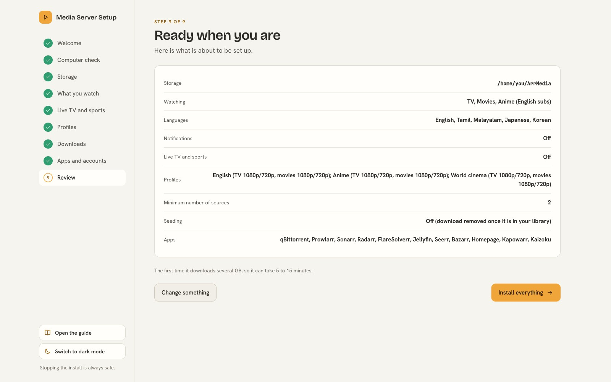
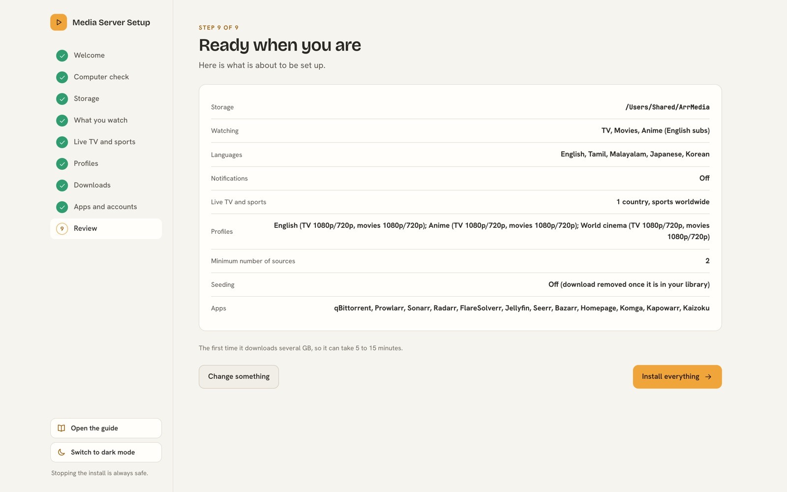
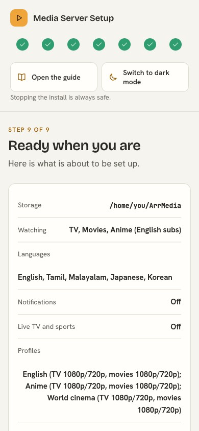
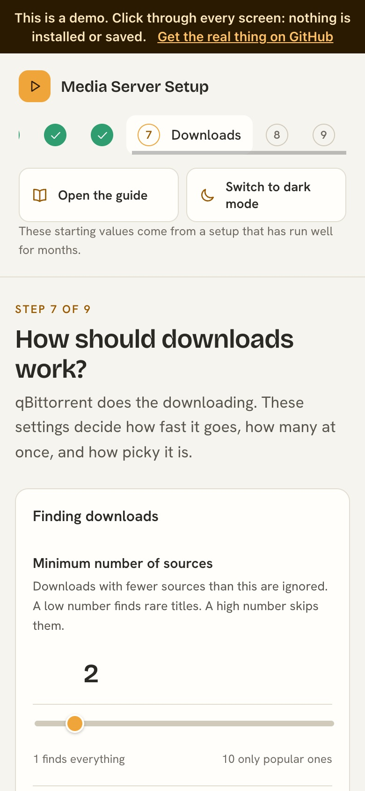

Watch and ask
Where it all ends up, and how people ask for more.
 JellyfinMovies, shows, anime and live TV on any device
JellyfinMovies, shows, anime and live TV on any device SeerrA page where family and friends ask for something to watch
SeerrA page where family and friends ask for something to watch
Free and open source · Windows, Mac, Linux, home servers
Movies, shows, anime, comics and manga that find, download and organise themselves. You answer a few questions. It sets up every app, links them, and runs a real search to prove it works.
Paste this into a terminal
curl -fsSL https://raw.githubusercontent.com/Hikki-dev/media-server-setup/main/install.sh | bashNo terminal needed
Needs Docker. The command checks for it, and shows its download page if it is missing. Then your browser opens the setup page.
Why this exists
Each one does a small job well. Wiring them together is the hard part. This does the wiring for you.
How it works
One request travels through five apps. They are already connected, so it just arrives.
Then, when the download is finished, it is deleted from the downloader so nothing keeps uploading. Comics and manga take the same road, through Kapowarr and Kaizoku.
What you get
Pick the groups you want. Each app is installed and linked to the others.
Where it all ends up, and how people ask for more.
Searches for you and picks the right release.
Brings it home, then makes it easy to follow.
Not just video. Your reading shelf fills itself too.
Know it is healthy without checking.
Only install what you want.
The setup installs just the apps you tick, and links those. You can change your mind later without installing again.
Why people pick it
At the end it runs a real search, so you know the apps are talking before you rely on them.
One drive, or movies, shows, anime and downloads spread over several. Folders you already have stay where they are.
English, Malayalam, Tamil, Korean, Japanese and more. English subtitles are found for everything else.
Each download is removed once it is in your library, so nothing keeps uploading and nothing takes up space.
Quit at any point. Your media is never touched, and this project hosts none of it.
Windows, Mac, Linux, a Proxmox LXC, or any computer with Docker. The setup page fits a phone too.
How easy it is
Stopping is always safe, and your media is never touched.
Step 1 · under a minute
It checks Docker, downloads the setup, and prints a web address. On Windows, double click one file instead.
$ curl -fsSL https://raw.githubusercontent.com/Hikki-dev/media-server-setup/main/install.sh | bash
Checking Docker…
Your browser opens the setup page.Step 2 · about 5 minutes
In your browser, in plain words. What you watch, where files live, which apps to add. Every choice has a sensible default.


Step 3 · 5 to 15 minutes
Check your choices, press install, and go and make tea. It installs every app, links them, then runs a real search to prove it works.


Try it first
The real setup page with pretend answers. Click through every screen. Nothing is installed or saved. It fits a phone too.


Picking a drive, choosing apps, and the install. There is no sound. The captions say what is happening.
Questions
A computer with Docker. The install command checks for it and shows its download page if it is missing.
Yes. It is free and open source, under the MIT licence.
No. It installs and connects other free programs on your own computer. Use it only for content you have the right to.
Stopping is always safe, and your media is never touched.
Yes. You can change any of the settings later without installing again.
No. Everything is explained in plain words, with sensible defaults already chosen.
Run one line. Answer a few questions. Your library starts filling itself.